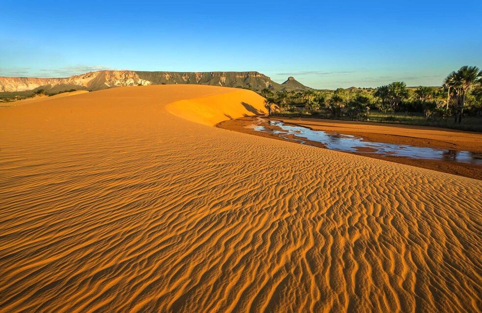

Apoie o Site Cultocantins
O Cultocantins é um espaço digital dedicado à cultura, à memória e às diferentes formas de expressão que aproximam a tradição tocantinense da identidade brasileira.
A cultura do Tocantins é marcada pela diversidade de povos, costumes e tradições. Sua riqueza aparece na natureza, culinária, com pratos como chambari, paçoca de carne de sol e peixes; na música e nas danças, como sússia, catira e jiquitaia; no artesanato, nas festas populares, nas folias religiosas e nas Cavalhadas.
A cultura tocantinense reúne influências indígenas, africanas e europeias, presentes nas histórias, nos saberes, nas crenças e no modo de viver de seu povo, fortalecendo a identidade e a memória do estado.
Mais do que preservar memórias, o Cultocantins quer dar espaço à cultura que está sendo produzida hoje, estimular novos diálogos e aproximar pessoas interessadas em conhecer, valorizar e participar dessa construção.
Cultocantins. Um espaço para lembrar, descobrir, comparar.
